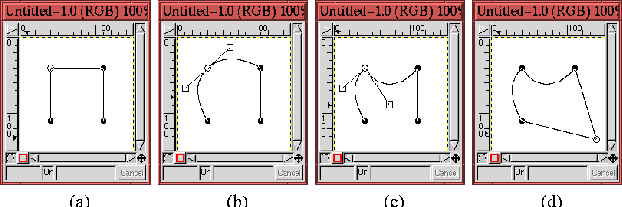
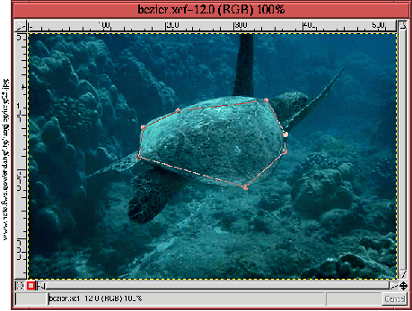
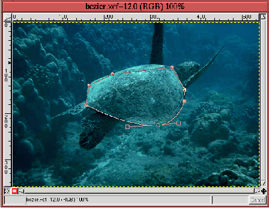
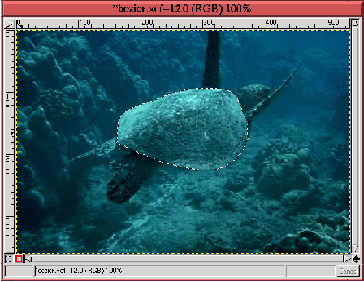
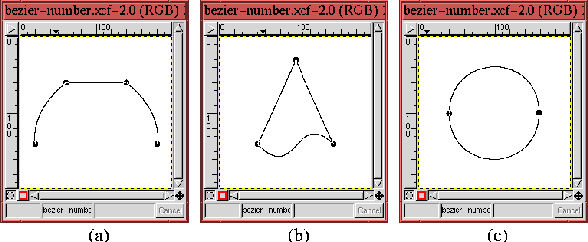

Next: 8.1.1.5
Выделение форм в Up: 8.1.1
Шесть инструментов группы Previous: 8.1.1.3
Волшебная палочка (Выделение
Next: 8.1.1.5
Выделение форм в Up: 8.1.1
Шесть инструментов группы Previous: 8.1.1.3
Волшебная палочка (Выделение
8.1.1.4
Кривые Безье
Figure: Использование направляющих
точек и рычагов кривой Безье:a)кривая Безье, b)манипулирование одновременно
двумя рычагами направляющей точки, c)манипулирование каждым рычагом
индивидуально, d)перемещение направляющей точки
 |
``Кривая Безье'' (или Контур) - очень нужный инструмент. Это
единственный инструмент, который допускает интерактивное определение области
выделения. Работа с ``Кривой Безье'' осуществляется путем помещениея
направляющих точек на изображение. Изначально точки соеденины между собой
прямым сегментом контура, однако используя рычаги, скрытые внутри
каждой точки, сегменты могжно превратить в кривые произвольным образом.
Используя кривую Безье можно изменять начальную область выделения до тех пор,
пока ``муравьиная дорожка'' не станет облегать субъект области выделения как
перчатка.
На рисунке 8.6
показаны основные операции с кривой Безье. Исходная кривая Безье, которую мы
видим на рисунке 8.6
(a), была создана пятью щелчками мыши на окне изображения. Верхний левый угол
был первой точкой, нижний левый, нижний правый и верхний правый были второй,
третьей и четвертой точками, добавленными в кривую. Последний щелчок мыши был
сделан на начальной точке, чтобы замкнуть кривую. С добавлением каждой новой
точки появляются прямолинейные сегменты, показанные на рисунке.
Во время создания кривой Безье курсор мыши приобретает вид стрелки с
закрашенным кружком под ней. Этот кружок говорит о том, что кривая не замкнута
и, что следующий щелчек мыши создаст новую направляющую точку (в версии 1.2.3
это выглядит несколько иначе - прим. переводчика). Отметим что кривая Безье не
обязательно должна быть замкнута. Это будет обсуждено более детально в
разделе 8.4,
который посвящен диалогу ``Контур''.
Сегменты между направляющими точками можно превратить в кривые используя
точки рычагов. Для замкнутой кривой Безье рычаги становятся видимыми с помощью
щелчка и перемещения мыши на направляющей точке. Рисунок 8.6
(b) показывает, как рычаги для верхнего левого угла кривой Безье были вытянуты
из соответствующей направляющей точки. Перемещение одного из рычагов приводит к
тому, что другой перемещается вместе с ним, но противоположном направлении. Как
показано на рисунке 8.6
(b), два сегмента кривой присоединенных к направляющей точке, превратились в
кривую с помощью рычагов.
Отметим, что рычаги не исчезают, когда кнопка мыши отпущена, и что положение
этих рычагов может быть в любое время изменено с помощью щелчка и перемещения
мыши. Однако, одновременно может быть виден только один набор рычагов. Щелчек на
другой направляющей точке отобразит ее рычаги, в то же время отключая видимость
рычагов другой точки. Так же отметим то, что когда курсор мыши приближается
достаточно близко к направляющей точке или рычагу, он меняет изображение со
стрелки на стрелку с пустым квадратиком. Так как рычаги похожи на квадратики, то
этот особый вид курсора весьма удобен для индикции того, что курсор находится
достаточно близко к точке ли рычагу, и можно начинать вносить изменения.
Рычаги можно перемещать и независимо друг от друга, используя клавишу
Shift. Нажатие клавиши Shift во время перетаскивания рычага с помощью
мыши приводит к тому, что перемещается только один рычаг, в то время как другой
остается неподвижным. Перемещение одного рычага таким образом позволяет изменять
кривизну одного сегмента кривой. На рисунке 8.6
(c) показан результат использования клавиши Shift при перемецении рычага.
Отметим, что это изменило кривизну верхнего сегмента квадрата, но в то же время
не изменило кривизну левого сегмента.
Помимо этого есть возможность переместить и саму направляющую точку. Это
делается нажатием клавиши Ctrl перед нажатием на направляющей точке.
Перемещение мыши при нажатой кнопке мыши и клавише Ctrl перемещает направляющую
точку. Результат перемещения направляющей точки показан на рисунке 8.6
(d).
После создания кривой Безье с правильно раставленными направляющими точками и
искривленными сегментами, она может быть преобразована в область выделения. Это
выполняется щелчком мыши внутри замкнутой кривой. Отметим, что когда курсор мыши
перемещается внутрь замкнутого пути, то он (курсор) изменяет свою форму на
стрелку пунктирным прямоугольником. Пунктирный прямоугольник напоминает
``муравьиную дорожку'', которая появится, когда кривая Безье будет преобразована
в область выделения.
Рисунки с 8.7
по 8.9
показывают применение инструмента ``кривая Безье'' на реальных примерах.
Figure: Создание кривой Безье
 |
Рисунок 8.7
показывает то, что замкнутая кривая Безье была создана помещением семи
направляющих точек по периметру панциря морской черепахи. Хотя все точки
размещены на кромке панциря, прямые линии между точками не описывают форму
панциря.
Как только что было описано, кривой Безье можно придать форму панциря с
помощью рычагов. Первая пара рычагов показана на рисунке 8.8.
Figure: Манипуляции с рычагами
направляющей точки кривой Безье
 |
Два рычага двигались независимо друг от друга, чтобы сегменты по обе стороны
от направляющей точки лучшим образом соответствовали изгибу панциря. Это видно
на рисунке по тому, что рычаги имеют разную длину и немного повернуты внутрь.
После настройки рычагов для каждой точки, кривая была преобразована в область
выделения. Результат, показанный ``муравьиной дорожкой'', приведен на
рисунке 8.9.
Figure: Область выделения, созданная из
кривой Безье
 |
И что интересно во всем этом примере, так это то, что область выделения была
создана малым количеством точек. В этом сила инструмента ``Кривые
Безье''. Однако и его возможности ограничены. Очень ``неправильная'' фигура
будет нуждаться в большом количестве направляющих точек и требовать больше
работы на подгонку кривой под форму.
Тут же встает практический вопрос - где разместить направляющие точки? И
другой - сколько направляющих точек потребуется, чтобы адекватно выбрать фигуру?
Насчет размещения направляющих точек имеются следующие правила:
- направляющая точка должна быть всегда помещена в угол (как например та,
которая помещена в самой задней точке панциря морской черепахи на рисунках
с 8.7
по 8.9).
- области с прямыми кромками могут быть созданы помещением направляющих
точек на каждом конце кромок, как показано на рисунке 8.10
(a).
- точка изгиба кривой может быть создана между парой направляющих точек, как
показано на нижнем сенменте кривой на рисунке 8.10
(b). Но она также может быть создана с помощью одной направляющей точки, если
поместить ее в точку изгиба.
Figure: Сколько требуется точек для
создания кривой Безье?
 |
А вот количество точек, необходимое для адекватной подгонки кривой Безье под
необходимую форму, это уже более трудный вопрос. Рисунок 8.10
(c) показывает, что для создания окружности достаточно двух точек. Таким
образом, одна точка может охватить 180 градусов кривой. Однако, это не учитывает
все характеристики кривой. Лично я люблю помещать направляющие точки так, чтобы
угол между сегментами области выделения был больше чем 90 градусов. Это правило
показано на примере изображения морской черепахи (смотри рисунок 8.7).
В любом случае, требуемое этим правилом количество точек не критично, потому
что оно всегда может быть изменено с помощью функций Добавить точку и
Удалить точку, которые доступны из диалога Контуры. Эти функции
обсуждаются в разделе 8.4.
Next: 8.1.1.5
Выделение форм в Up: 8.1.1
Шесть инструментов группы Previous: 8.1.1.3
Волшебная палочка (Выделение
Grigory Bakunov 2003-05-26